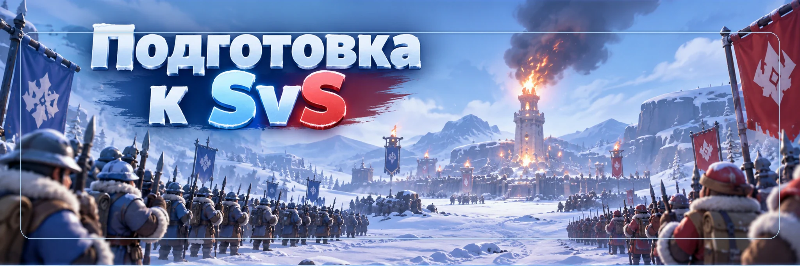

Подготовка к SvS
Подготовка к SvS длится пять основных дней. Два государства набирают очки за развитие аккаунтов.
не просто потратить много ресурсов, а потратить их в правильный день.
💾 Что копить заранее
- 🔥 Огненные кристаллы и связанные материалы;
- ⏱️ ускорения;
- 🦸 фрагменты героев;
- 🎡 ресурсы Колеса удачи;
- 📚 Книги знаний и Печати экспертов;
- 🐾 материалы питомцев;
- 👑 материалы губернатора и талисманов;
- ⚔️ Камни эссенции, Виджеты и Мифрил;
- ⚡ энергию и предметы её восстановления.
Один ресурс может приносить очки в несколько дней. Не выливаем весь запас сразу. Перед каждой крупной тратой проверяем текущие задания в игре.
🏗️ День 1: развитие города
Основной упор: Огненные кристаллы, строительство, исследования, талисманы и подходящие ускорения.
Заранее подготовьте долгие улучшения зданий и исследований. В актуальных таблицах подготовки Огненные и Очищенные кристаллы, потраченные на здания, засчитываются при запуске улучшения, а не при его завершении. Сверьте этот пункт со списком источников очков в своей RU-версии.
Ускорения обучения войск сохраняем для 4-го дня, чтобы завершить обучение и повышение армии. Важно: на 4-й день очки начисляются за готовые войска, а не за минуты потраченных ускорений.
🌾 День 2: сбор и развитие
Работают сбор ресурсов, Колесо удачи, подходящие фрагменты героев, Эксперты, Огненные кристаллы и часть ускорений.
Хитрость со сбором: очки за сбор начисляются при возвращении марша с ресурсами. Можно отправить марши на крупные ресурсные клетки до начала этапа, чтобы они вернулись уже после его старта.
Колесо, фрагменты героев, Книги знаний и Печати экспертов могут снова понадобиться на 3-й день. Если этапы уже взяты, остаток сохраняем.
🐻 День 3: охота
Главное сегодня: звери, Полярный ужас, расход энергии, питомцы, Колесо, герои, Эксперты и талисманы.
Перед третьим днём не тратьте банки энергии без необходимости.
Часть материалов можно использовать сегодня, если государству нужны очки. Если запас небольшой, основную часть лучше оставить на 5-й день.
🪖 День 4: войска
Главный день армии: завершение обучения и повышения войск, развитие талисманов, Камни эссенции, Виджеты и Мифрил. Ускорения обучения помогают завершить войска вовремя, но отдельные очки за минуты ускорений в этот день не начисляются.
Если есть много войск низкого уровня, повышение может дать хороший объём очков. Очки за повышение рассчитываются по разнице между новой и прежней ступенью; ориентируйтесь на список очковых действий в игре.
Камни эссенции, Виджеты и Мифрил не обязательно тратить полностью. Они могут снова приносить очки на 5-й день.
🔥 День 5: финальный рывок
В ход идут питомцы, снаряжение губернатора, Камни эссенции, Виджеты, Мифрил, Огненные кристаллы, ускорения и другие доступные категории.
Сначала смотрим счёт государств, личные награды и цену следующего этапа. Если победа уже уверенная или нужные награды забраны, часть ресурсов сохраняем на следующий цикл.
🏆 Как тратить правильно
- Сначала закрываем разумные личные этапы.
- Помогаем государству там, где это действительно нужно.
- Не тратим редкие материалы ради красивой цифры в рейтинге.
- Если ресурс пригодится завтра, часть оставляем.
💬 Опыт игроков
- Начинайте копить сразу после предыдущего SvS.
- 2-й и 3-й дни связаны: Колесо, герои и Эксперты лучше распределять.
- Ускорения обучения бережём на 4-й день.
- Энергию бережём на 3-й день.
- Питомцев разумно делить между 3-м и 5-м днями.
- Камни эссенции, Виджеты и Мифрил можно делить между 4-м и 5-м днями.
- Пятый день используем для финального рывка, а не для обязательного обнуления склада.
🚫 Частые ошибки
- Слить все ускорения в 1-й день.
- Потратить все фрагменты во 2-й день.
- Прийти в 3-й день без энергии.
- Тратить все ускорения обучения раньше подготовки войск к 4-му дню, не сравнив начисление очков по дням.
- Потратить все материалы питомцев в среду.
- Выжечь Камни эссенции, Виджеты и Мифрил в четверг.
- В пятницу нажать всё подряд просто потому, что это последний день.
- Пользоваться старой таблицей вместо текущих заданий игры.
✅ Быстрая схема
🏗️ День 1
Город, исследования, кристаллы. Ускорения войск сохраняем.
🌾 День 2
Сбор, Колесо, герои, Эксперты. Часть оставляем на 3-й.
🐻 День 3
Энергия, звери, Полярный ужас, питомцы, герои и Эксперты.
🪖 День 4
Завершение обучения и повышения войск (ускорения помогают, но сами не дают очков), Камни эссенции, Виджеты и Мифрил. Часть материалов оставляем на 5-й.
🔥 День 5
Питомцы, снаряжение губернатора и героев, Камни эссенции, Виджеты, Мифрил, кристаллы и подходящие ускорения. Фрагменты героев, Книги знаний и Печати экспертов на 5-й день обычно не дают очков.
Подготовка к SvS выигрывается накоплением и распределением.
Не спрашиваем: «Что я могу потратить сегодня?»
Спрашиваем: «Что выгодно потратить сегодня, а что принесёт больше пользы завтра?»